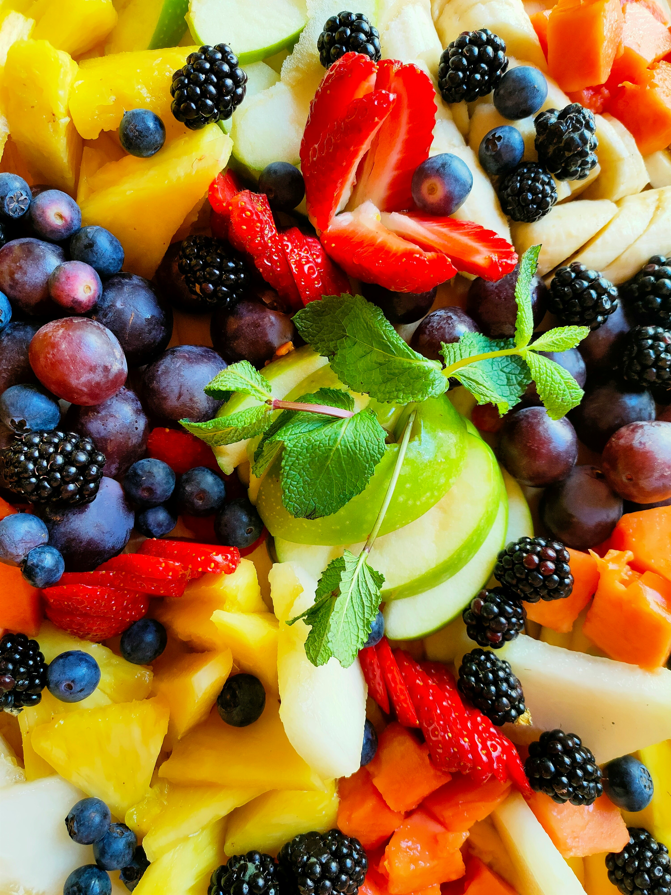

Fresh Fruit Salad

Photo by
Margarida Afonso
on
Unsplash
Fresh and Colorful Healthy Snack
Fruit salad is a refreshing combination of fresh fruits that is naturally
sweet and easy to prepare.
It makes a healthy breakfast, snack, or dessert.
Ingredients
- 1 apple
- 1 banana
- 1 orange
- 1 cup grapes
- 1 cup strawberries
- 1 tablespoon honey
- 1 tablespoon lemon juice
Steps:
- Wash all the fruits.
- Peel and cut the fruits into small pieces.
- Place all fruits in a large bowl.
- Add honey and lemon juice.
- Gently mix everything together.
- Chill in the refrigerator if desired.
- Serve fresh.